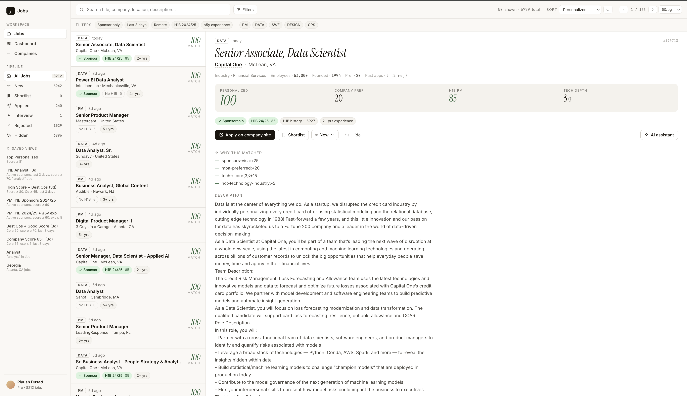
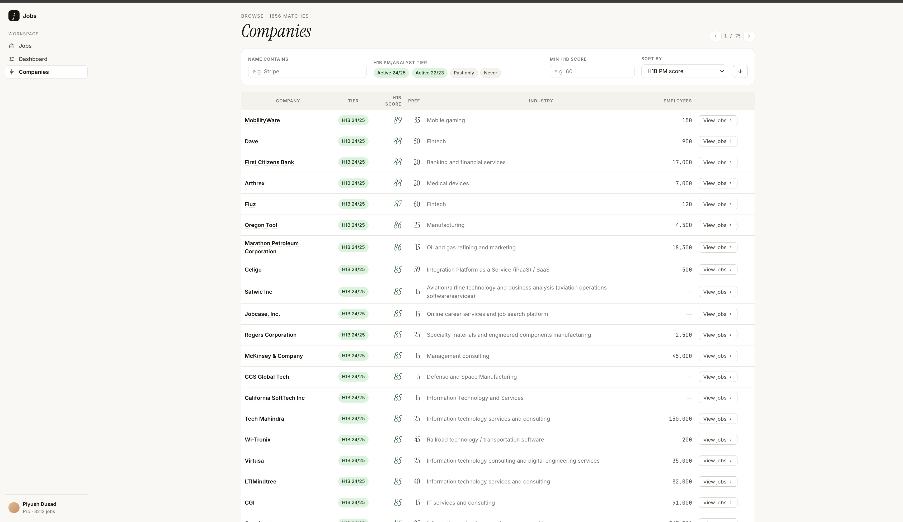

Projects
Selected work in analytics, AI, and product.
AI Job Search App
A personalized job-search workspace that aggregates postings, scores each role across multiple signals (H1B-sponsor history, company preference, role-fit, tech depth) and explains why each match scored the way it did. Includes a pipeline tracker (shortlist → applied → interview), saved smart views, and an AI assistant for per-role analysis.


UGA Softball Analytics
A Streamlit dashboard built for the University of Georgia softball team that ingests TrackMan pitch data and produces an umpire report card — call accuracy, strike-zone analysis (perceived vs. actual), and per-pitch scatter plots showing missed calls. Coaches use it after each game to evaluate officiating impact and inform player development.